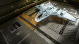

Макс. пассажиров (экономкласс)
~66
Mandalay может возить пассажиров, как любой вместительный средний корабль, но строился не для этого. Бонуса за комфорт Saud Kruger у него нет: места оплачиваются по стандартным тарифам. Самый большой отсек класса 6 ограничивает вместимость экономкласса примерно ~66 местами, а в три отсека класса 1 каюты вообще не помещаются. Его преимущество — дальность: штатный рамочно-сместительный двигатель с SCO сокращает маршрут к далёким туристическим объектам на один прыжок по сравнению с другими средними кораблями. Недорогой корпус садится на средние площадки аванпостов, недоступные большим лайнерам. Для заработка на пассажирах лучше подходят Dolphin, Lynx и Python.

Корабль получает оценку пригодности от 1 до 100 в полностью улучшенной сборке для этой роли, в сравнении со всеми другими кораблями той же роли. См. методику оценки кораблей.
Mandalay — средний исследователь Zorgon Peterson, рассчитанный на SCO. Как и любой вместительный средний корабль, его можно оснастить пассажирскими каютами, но это переоборудованный исследователь, а не лайнер. Каюты экономкласса превращают его в экскурсионный корабль для средних площадок: он садится почти везде и прыгает дальше соперников. Но без надбавки за комфорт Saud Kruger пассажиры платят стандартный тариф, и выручка с места ниже, чем у Dolphin с четвертью его вместимости.
Его реальное преимущество для перевозок — дальность и доступ к аванпостам: двигатель SCO позволяет связать разбросанные туристические маяки за меньшее число прыжков, чем на других средних кораблях. Лёгкий корпус садится на средние площадки аванпостов, недоступные Beluga и Orca. Но вместимость мала: одна каюта экономкласса класса 6 — самый большой доступный блок мест, три отсека класса 1 не принимают каюты, а отсек для премиум-каюты только один. Поэтому доход за рейс ниже всех в этой роли.
Длинные маршруты по разбросанным достопримечательностям и доставки на аванпосты, где дальность и средняя площадка важнее числа пассажиров. Подходит тем, кто уже исследует на Mandalay и хочет время от времени брать туристов по пути.
У Mandalay в пассажирской роли два преимущества и два недостатка:
Большая дальность с SCO и недорогой доступ к средним площадкам повышают оценку. Но всего ~66 мест, отсутствие кают класса 1 и надбавки за комфорт делают его наименее пригодным для постоянных пассажирских перевозок.
Итоговая 54/100 оценка складывается из пассажирских критериев, расположенных по приоритету. У каждого есть свой вес (доля от 100); корабль получает часть баллов по сравнению со всеми соперниками. В сумме они дают итоговую оценку.
| Критерий | Баллы | Почему столько |
|---|---|---|
| Вместимость и классы кают | 15/35 | Набор отсеков 6·5·4·4·3·3·2·1·1·1 даёт около ~66 мест экономкласса со щитом. Отсек класса 6 вмещает самый большой блок мест; в три отсека класса 1 каюты не ставятся, а отсек класса 4 под премиум-каюту только один. Хуже Krait Phantom (~94), Python (~146) и Lynx (~100), лучше лишь Asp (~32). |
| Комфорт | 6/20 | Исследователь Zorgon Peterson не получает бонуса за комфорт лайнеров Saud Kruger. Все места оплачиваются по стандартному тарифу, доход на пассажира самый низкий. Это главное ограничение, как у Krait Phantom и Asp. |
| Дальность прыжка и бак | 17/20 | FSD класса 5 со штатным SCO, «Увеличенной дальностью» и «Управлением массой» сокращает маршрут к разбросанным достопримечательностям на один прыжок по сравнению с другими средними пассажирскими кораблями даже с каютами. Это главное преимущество в роли, при фиксированном баке 5C. |
| Щит и безопасность | 7/15 | Двухконтурный щит класса 4 с «Усиленным» и «Быстрой зарядкой» — самый малый, который разворачивается на корпусе массой 230 т. Один усилитель с «Усиленной конструкцией» и батарея 1C при 4 внешних креплениях дают приемлемую защиту лёгкому корпусу, но без военных отсеков и с умеренной прочностью щита. |
| Класс площадки и цена | 9/10 | Средняя площадка даёт доступ к аванпостам, куда не попадут крупные лайнеры. Корпус ~16.5 млн кр. не требует звания или разрешения (есть нюанс с Odyssey и ARX) и недорог в оснащении. Это сильная сторона, особенно если корабль уже куплен для исследований. |
| Взвешенный итог | 54/100 | Совпадает с итоговой оценкой пригодности корабля для этой роли. |
Вес каждого критерия отражает приоритеты редакции, а не формулу игры. Длина полосы показывает, сколько из возможных баллов набрал корабль. Длинные полосы дали основную часть оценки, короткие показывают потери. См. методику оценки кораблей.
Во всех таблицах корабли оцениваются именно для пассажирских перевозок и разделены по размеру посадочной площадки. Столбец Вместимость под каюты показывает общий объём дополнительных отсеков, то есть место для кают. Оценка пригодности по шкале от 1 до 100 та же, что и на остальных страницах.
| Корабль | Класс | Вместимость под каюты | Плюсы и минусы | Оценка |
|---|---|---|---|---|
| Lynx Highliner | Средняя | — | Оценка выше; комфорт; площадка и ценаЩит | 90 |
| Python | Средняя | ~294 т | Оценка выше; щит; площадка и ценаКомфорт | 70 |
| Krait Phantom | Средняя | ~190 т | Оценка выше; дальность; площадка и ценаКомфорт | 64 |
| Asp Explorer | Средняя | ~130 т | Оценка выше; площадка и цена; дальностьКомфорт | 60 |
| Mandalay этот | Средняя | ~154 т | — этот корабль (для сравнения) | 54 |
| Corsair | Средняя | ~318 т | Каюты; щитОценка ниже; комфорт | 50 |
| Krait Mk II | Средняя | ~230 т | Каюты; дальностьОценка ниже; площадка и цена | 46 |
| Type-8 Transporter | Средняя | ~406 т | Каюты; площадка и ценаОценка ниже; комфорт | 46 |
Оценены 8 пассажирских кораблей для средних площадок. Лидер — Lynx Highliner (90). Они садятся там же, где Mandalay, так что их можно сравнивать напрямую.
| Корабль | Класс | Вместимость под каюты | Плюсы и минусы | Оценка |
|---|---|---|---|---|
| Beluga Liner | Большая | ~370 т | Оценка выше; каюты; комфортДальность | 95 |
| Imperial Cutter | Большая | ~794 т | Оценка выше; каюты; щитКомфорт | 89 |
| Orca | Большая | ~194 т | Оценка выше; комфорт; площадка и ценаДальность | 88 |
| Anaconda | Большая | ~470 т | Оценка выше; дальность; каютыКомфорт | 82 |
| Imperial Clipper | Большая | ~250 т | Оценка выше; щит; дальностьКомфорт | 64 |
| Caspian Explorer | Большая | ~434 т | Оценка выше; каюты; дальностьПлощадка и цена | 60 |
| Type-7 Transporter | Большая | ~310 т | Оценка выше; каюты; площадка и ценаКомфорт | 56 |
| Type-9 Heavy | Большая | ~790 т | Оценка выше; каюты; площадка и ценаКомфорт | 56 |
| Panther Clipper Mk II | Большая | ~662 т | Каюты; щитОценка ниже; площадка и цена | 48 |
Среди пассажирских кораблей для больших площадок оценено 9 моделей. Лидер — Beluga Liner (95). Нужны площадки и бюджет побольше. По характеристикам они сильнее, но относятся к другому классу площадки.
| Корабль | Класс | Вместимость под каюты | Плюсы и минусы | Оценка |
|---|---|---|---|---|
| Dolphin | Малая | ~88 т | Оценка выше; комфорт; площадка и ценаКаюты | 80 |
| Imperial Courier | Малая | ~34 т | Площадка и цена; щитОценка ниже; каюты | 52 |
Среди пассажирских кораблей для малых площадок оценены 2 модели. Лидер — Dolphin (80). Корпуса дешевле, площадки меньше. По цене они выгоднее, но относятся к другому классу площадки.
Для владельцев Odyssey, покупающих за кредиты, корпус Mandalay стоит около 16.5 млн кр. Без Odyssey сначала нужно разблокировать его за ARX. Звание и разрешение не нужны. Каюты недороги; основные расходы — инженерные улучшения FSD, двигателей и щита.
Если Mandalay уже куплен для исследований, переоборудование почти ничего не стоит. Замените топливозаборник и блок авторемонта (AFMU) каютами, и получите экскурсионный корабль. Но покупать его только для перевозок невыгодно: мало мест, низкий доход с места, а в сравнении с Dolphin за десятую часть цены и с Python с вдвое большей вместимостью он проигрывает.
Mandalay окупается как пассажирский корабль, только если уже стоит в ангаре для исследований. Если покупать именно лайнер, более дешёвые корабли дают больше дохода с места, а более дорогие перевозят гораздо больше пассажиров.
Переоборудованный лайнер для средних площадок: экономкласс и одна премиум-каюта первого класса, двухконтурный щит для безопасности и двигатель SCO с максимальной дальностью. Начальный вариант — только покупка; класс A — рабочая основа; инженерные улучшения увеличивают дальность и снижают массу. Бонуса за комфорт Saud Kruger нет, так что преимущества — дальность и недорогой доступ к средним площадкам, а не доход с места.
| Отсек | Начальная · только покупка | Класс A · без улучшений | С инженерными улучшениями | Примечания |
|---|---|---|---|---|
| Внешние крепления | ||||
| Крепление 1 | — | 0A Усилитель щита | G5 Усиленная конструкция + Суперконденсаторы | 0A усилитель щита. «Усиленная конструкция» повышает прочность двухконтурного щита класса 4: недорогая защита пассажиров. |
| Крепление 2 | — | 0I Точечная оборона | G1 Увеличенный боезапас (без экспериментального эффекта) | Необязательно, низкий приоритет: увеличенный боезапас добавляет выстрелы. Точечная оборона сбивает подлетающие ракеты и торпеды. |
| Крепление 3 | — | 0I Теплоотводная катапульта | G1 Увеличенный боезапас (без экспериментального эффекта) | Необязательно, низкий приоритет: увеличенный боезапас добавляет заряды теплоотвода. Сбрасывает тепло при перехвате. |
| Крепление 4 | — | 0I Пусковая установка дипольных отражателей | G1 Увеличенный боезапас (без экспериментального эффекта) | Необязательно, низкий приоритет: увеличенный боезапас даёт больше залпов дипольных отражателей. Дипольные отражатели срывают захват орудиями на подвижном подвесе, давая время уйти. |
| Основные модули | ||||
| Обшивка | Лёгкий сплав | Лёгкий сплав | G5 Снижение массы (без экспериментального эффекта) | |
| Силовая установка | 5E Силовая установка | 5A Силовая установка | G5 Низкие выбросы + Распределение тепла | «Низкие выбросы» сохраняют холодный режим корпуса с SCO при достаточной мощности для кают и щита. «Распределение тепла» отводит остаток тепла. |
| Маневровые двигатели | 5E Маневровые двигатели | 5A Маневровые двигатели | G5 Грязная настройка двигателей + Форсированные двигатели | Двигатели класса A с «Грязной настройкой» позволяют уйти после перехвата; эффект «Форсированные двигатели» улучшает форсаж. |
| Рамочно-сместительный двигатель (FSD) | 5E Рамочно-сместительный двигатель (FSD) | 5A Рамочно-сместительный двигатель (FSD) | G5 Увеличенная дальность + Управление массой | Двигатель SCO — главное преимущество корабля: Увеличенная дальность на G5 с «Управлением массой» сокращает маршрут к удалённым достопримечательностям на один прыжок по сравнению со средними соперниками. |
| Система жизнеобеспечения | 4E Система жизнеобеспечения | 4A Система жизнеобеспечения | G5 Снижение массы (без экспериментального эффекта) | Класс A даёт больше времени с кислородом; Снижение массы уменьшает массу для дальности под грузом. Система жизнеобеспечения не имеет экспериментального эффекта. |
| Распределитель энергии | 5E Распределитель энергии | 5A Распределитель энергии | G5 Приоритет двигателей + Кластерные конденсаторы | Приоритет двигателей ориентирует распределитель класса 5 на форсаж при отходе; «Кластерные конденсаторы» увеличивают запас заряда. |
| Сенсоры | 5E Сенсоры | 5D Сенсоры | G5 Снижение массы (без экспериментального эффекта) | Поставьте класс D и снизьте массу: лайнеру не нужна большая дальность сенсоров, лучше сэкономить массу для прыжка. |
| Топливный бак | 5C Топливный бак | 5C Топливный бак | (нет чертежа улучшения) | Штатный бак класса C. Ёмкость фиксирована и не улучшается у инженеров. |
| Дополнительные отсеки | ||||
| Класс 6 | 6E Пассажирская каюта экономкласса | 6E Пассажирская каюта экономкласса | (нет чертежа улучшения) | Каюта экономкласса 6 (32 места) даёт основную вместимость: это самый большой блок мест на корабле. |
| Класс 5 | 5E Пассажирская каюта экономкласса | 5E Пассажирская каюта экономкласса | (нет чертежа улучшения) | Каюта экономкласса 5 (16 мест) для групповых перевозок. |
| Класс 4 | — | 4C Пассажирская каюта первого класса | (нет чертежа улучшения) | Каюта первого класса 4 (3 места) — единственная премиум-каюта для VIP. Первый класс — высший уровень, который помещается в отсек класса 4. Без бонуса лайнера доход ниже, чем на корабле Saud Kruger. |
| Класс 4 | — | 4C Генератор двухконтурного щита | G5 Усиленный + Быстрая зарядка | Двухконтурный щит класса 4 — самый маленький, который разворачивается на корпусе массой 230 т. «Усиленный» даёт максимум МДж, а «Быстрая зарядка» ускоряет восстановление для безопасности пассажиров. |
| Класс 3 | — | 3E Пассажирская каюта экономкласса | (нет чертежа улучшения) | Каюта экономкласса 3 (4 места) добавляет вместимость. |
| Класс 3 | — | 3E Пассажирская каюта экономкласса | (нет чертежа улучшения) | Вторая каюта экономкласса 3 (4 места) для групповых перевозок. |
| Класс 2 | — | 2E Пассажирская каюта экономкласса | (нет чертежа улучшения) | Каюта экономкласса 2 (2 места). Класс 2 — самый малый отсек, в который вообще помещается каюта. |
| Класс 1 | — | 1I Подробный сканер поверхности (DSS) | G5 Увеличенный радиус сканирования зондов (без экспериментального эффекта) | Необязательно, низкий приоритет: увеличенный радиус повышает охват зондов. Картографирует живописные небесные тела для туристических вылетов. |
| Класс 1 | — | 1C Батарея щита | G4 Специализированная (без экспериментального эффекта) | Необязательно, низкий приоритет: специализация снижает всплеск тепла и мощности батареи. Быстро восстанавливает щит в экстренной ситуации. |
| Класс 1 | — | 1E Усилитель модулей | (нет чертежа улучшения) | Лёгкий усилитель модулей распределяет урон от пробития между внутренними модулями. Инженерных улучшений нет. В отсеки класса 1 не помещаются пассажирские каюты. |
| Планировщики и экспорт | ||||
| Открыть в Coriolis | открыть | открыть | открыть | Открывает coriolis.io одним нажатием. |
| Открыть в EDSY | открыть | открыть | открыть | Открывает edsy.org одним нажатием. |
| Скопировать SLEF | Копирует исходный экспорт оснащения корабля (SLEF) для выбранного варианта. | |||
Mandalay вмещает меньше любого специализированного лайнера и не получает надбавки за комфорт. Это перевозчик экономкласса для групп, а не источник VIP-дохода. Его преимущество — дальность: двигатель SCO двигатель SCO сокращает путь к удалённым достопримечательностям на один прыжок по сравнению с другими средними кораблями, а лёгкий корпус садится на аванпосты, недоступные большим лайнерам. Каюты не помещаются в отсеки класса 1, поэтому предел — около 66 мест экономкласса.
Купите корпус (~16.5 млн кр.) со штатными основными модулями класса E и бесплатной обшивкой из лёгкого сплава. Поставьте только две самые большие пассажирские каюты (6E и 5E, экономкласс) примерно на ~48 недорогих мест.
Остальное оставьте пустым: четыре внешних крепления, двухконтурный щит класса 4, премиум-каюта первого класса и свободные отсеки классов 3/2/1 заполняются в сборке класса A.
Сначала доведите до класса A FSD и маневровые двигатели для дальности и мобильности, чтобы уходить от перехватов.
Приоритет перехода на класс A для переоборудованного экскурсионного корабля:
Экскурсионный Mandalay класса A со всеми четырьмя внешними креплениями и штатной лёгкой обшивкой стоит около 28 млн кр. Большая часть затрат приходится на основные модули, а не на каюты.
Пассажирская инженерная схема для холодного корпуса с SCO: сначала дальность, потом подвижность и щит. Felicity Farseer (при полном доступе) отвечает за FSD. Закрепите чертежи для удалённого применения G1→G5.
Примерный рост характеристик для трёх вариантов (ориентировочные значения, не точные результаты улучшений):
| Модуль | Чертёж | Экспериментальный эффект | Инженер |
|---|---|---|---|
| FSD (SCO) (5) | Увеличенная дальность (G5) | Управление массой | Felicity Farseer |
| Маневровые двигатели (5) | Грязная настройка двигателей (G5) | Форсированные двигатели | Professor Palin / Mel Brandon |
| Силовая установка (5) | Низкие выбросы (G5) | Распределение тепла | Hera Tani |
| Двухконтурный щит (4) | Усиленный (G5) | Быстрая зарядка | Lei Cheung |
| Распределитель энергии (5) | Приоритет двигателей (G5) | Кластерные конденсаторы | The Dweller |
| Система жизнеобеспечения / Сенсоры | Снижение массы (G5) | (нет) | Etienne Dorn |
| Усилитель щита (0) | Усиленная конструкция (G5) | Суперконденсаторы | Didi Vatermann |
| Обшивка | Снижение массы (G5) | — | Selene Jean |
Обшивка остаётся из лёгкого сплава. Инженерное улучшение G5 на снижение массы облегчает корпус ради дальности под грузом. С улучшениями Mandalay берёт ~66 пассажиров экономкласса, за один прыжок добирается до достопримечательностей, которые другим средним кораблям не по плечу, и садится на аванпосты, закрытые для больших лайнеров. Но надбавки за комфорт нет, поэтому доход за рейс уступает каждому специализированному лайнеру. Его сильные стороны — дальность и площадки, не вместимость или оплата.
Лучше всего подходят разбросанные достопримечательности и доставки на аванпосты, где важнее дальность и площадка. На массовых рейсах вроде Robigo лайнер с бонусом за комфорт или вместительный Python зарабатывает намного больше.
Mandalay неплохо справляется как переоборудованный пассажирский корабль, но не как полноценный лайнер. Недорогой корпус без требований к доступу прыгает дальше и садится в большем числе мест, чем любой средний экскурсионный корабль. Но мест меньше, чем у большинства, и доплаты за комфорт нет, поэтому он последний в этой роли. Возите пассажиров, если он уже служит исследователем; для заработка возьмите специализированный лайнер.
Данные на странице сверены с источниками ниже.